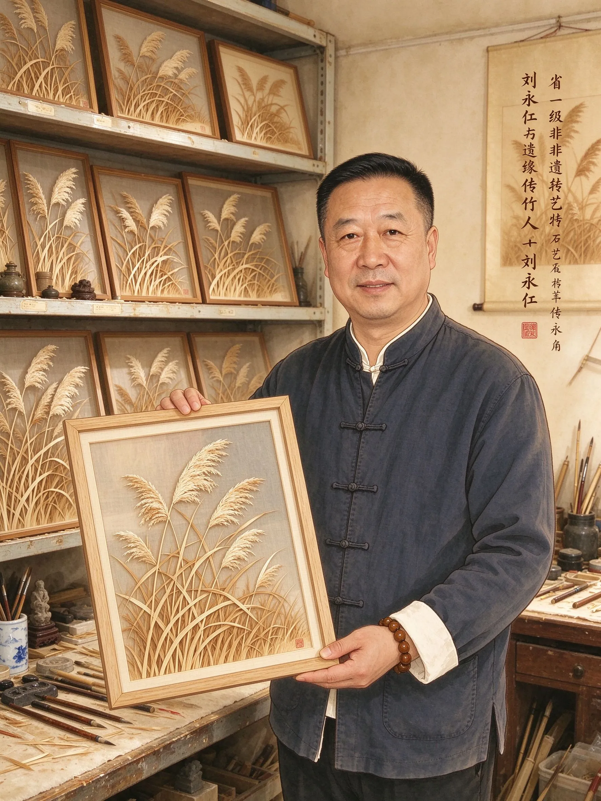
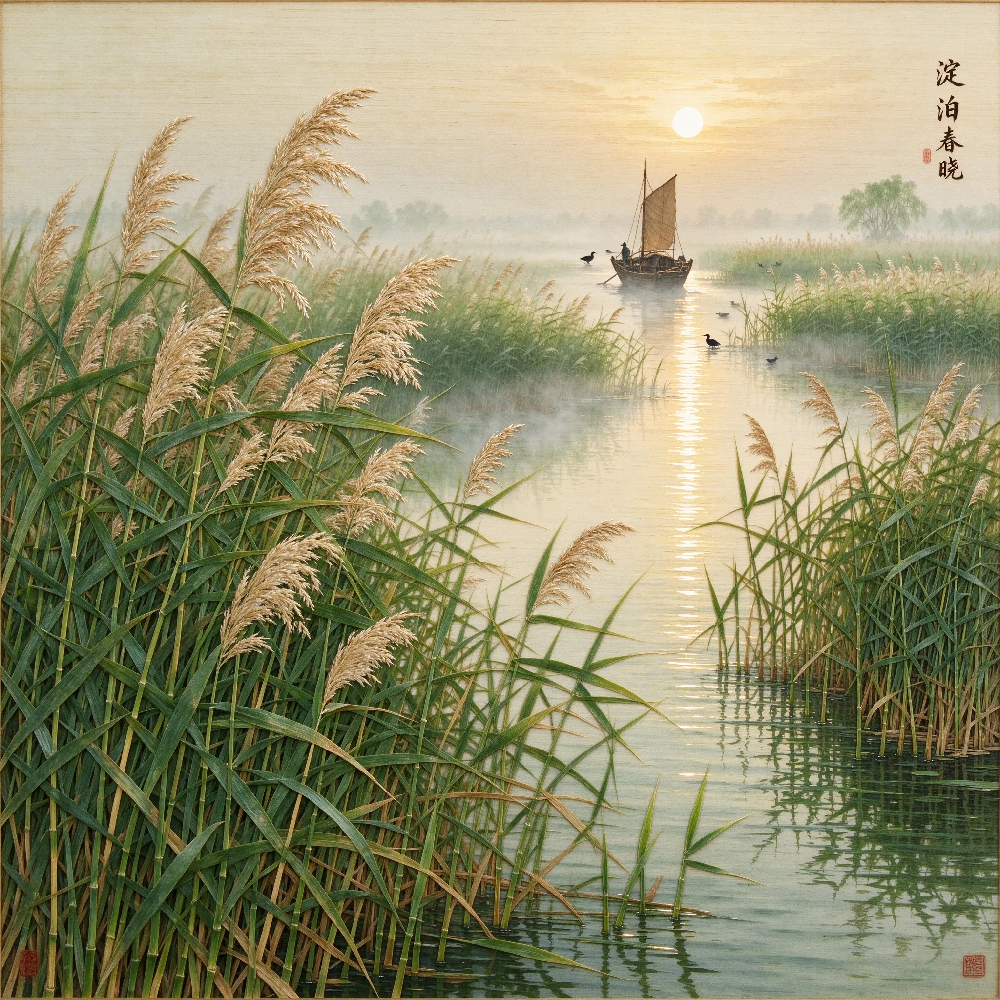
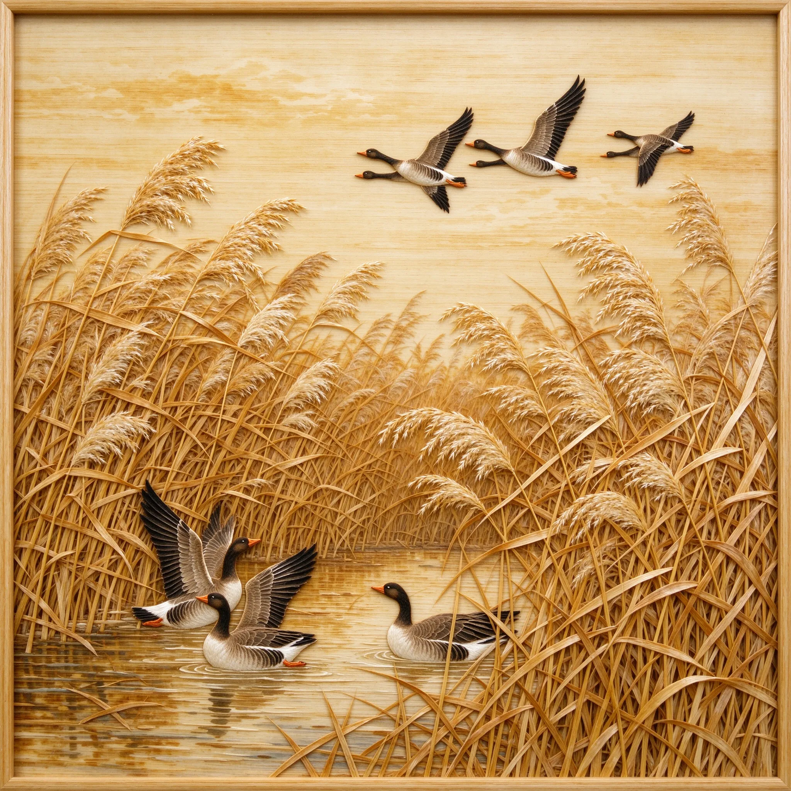
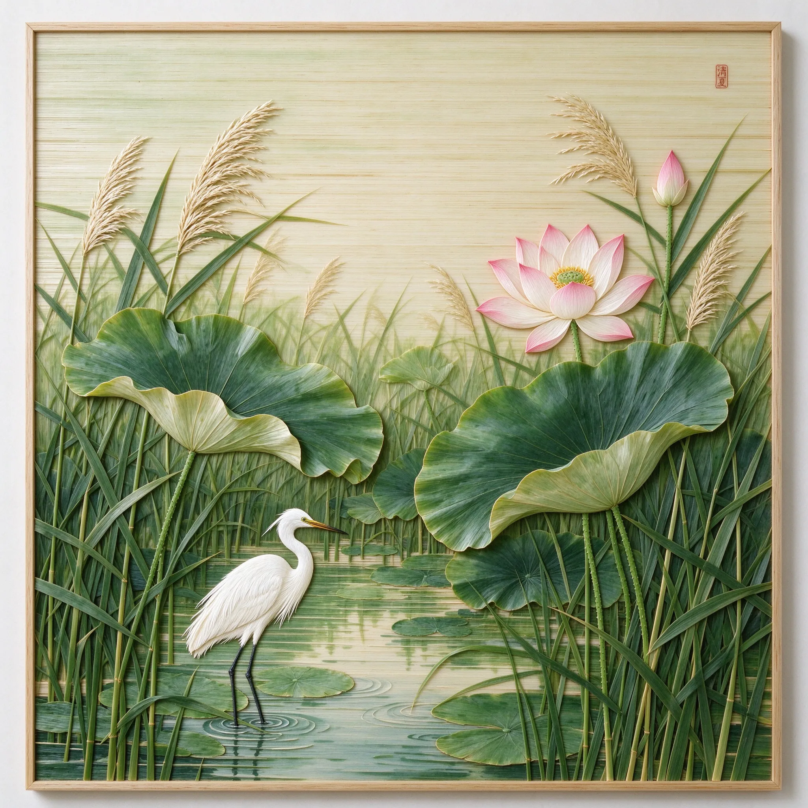
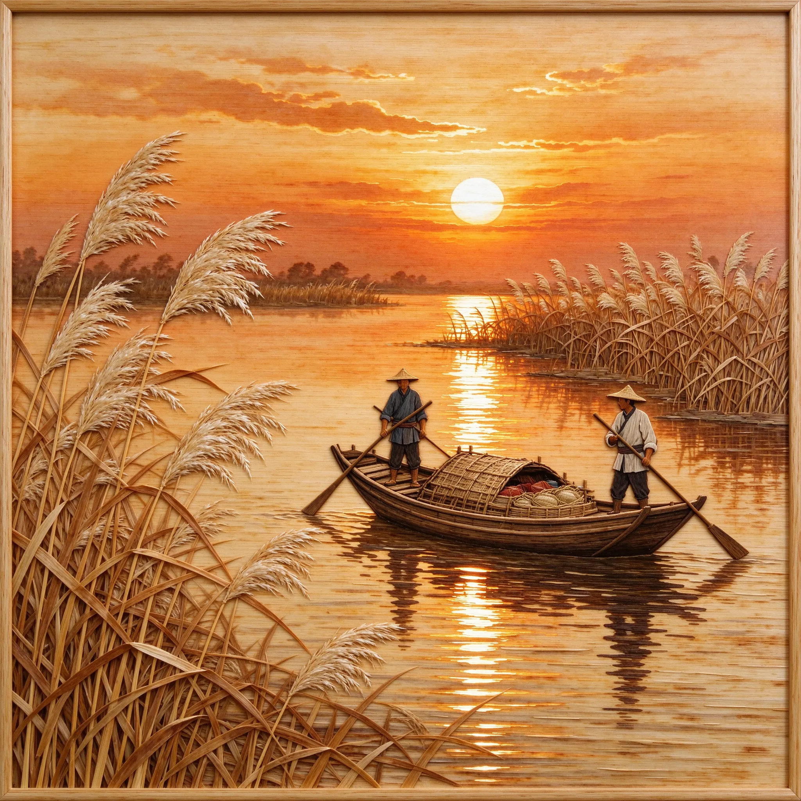
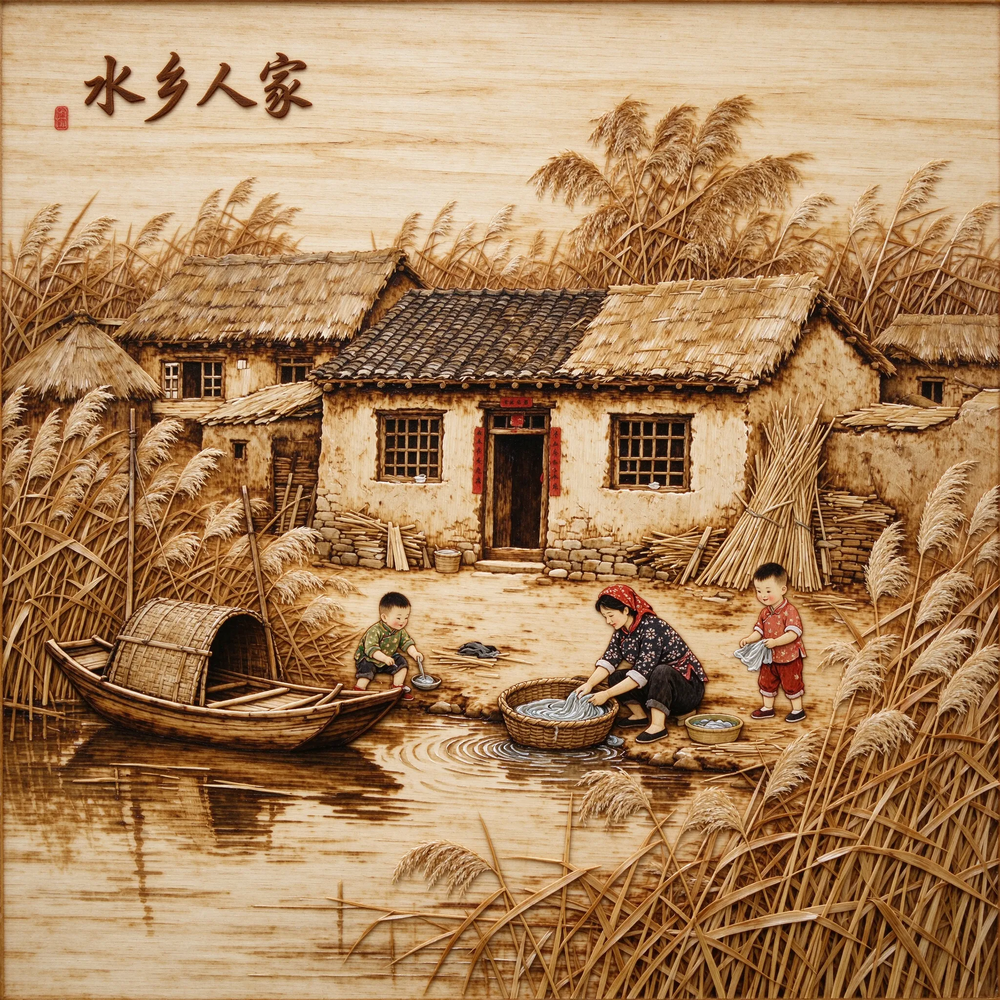
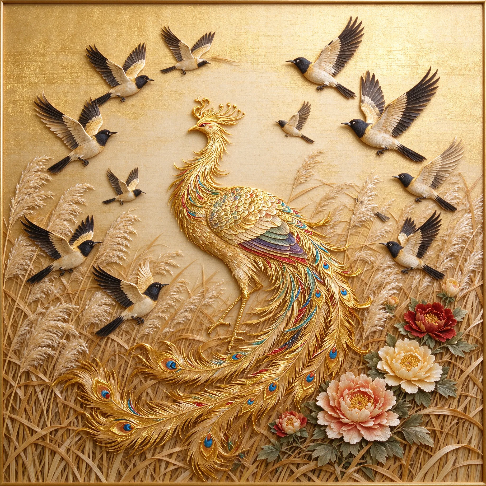

省级非遗代表性传承人
白洋淀芦苇画
刘永利，1965年生于河北省安新县白洋淀畔的一个匠人之家。自幼生长于淀区水乡，目之所及皆是随风摇曳的芦苇荡，耳濡目染间对这门以芦苇为材的民间艺术产生了深厚情感。少年时他便随父辈下淀收割芦苇，熟知不同季节芦苇的色泽与脾性，为日后从艺打下了坚实的根基。
1980年代初，刘永利正式拜入芦苇画老艺人门下，系统学习剪、割、刨、漂、压、烙、绘七道古法工序。十余年潜心钻研，他尤擅"烙"法——以烙铁温度之差在芦苇片上烫出深浅不一的褐色层次，使画面呈现水墨晕染般的意境。出师后，他扎根白洋淀畔开设工坊，将毕生精力倾注于芦苇画的创作与传承之中。
在艺术理念上，刘永利始终秉持"顺物之性、循理而行"的匠人哲学。他认为芦苇是有生命的材料，每一片都有独特的纹理与走向，创作时不可强求，须顺应其天然之势，方能令画面气韵生动。他在继承传统水乡题材的基础上，融入北方山水画的雄浑意境，逐渐形成了质朴苍润、层次分明的个人风格。
多年来，刘永利的作品先后入选省级民间工艺展览并屡获奖项，代表作《芦雁归秋》《淀泊晓雾》被多家美术馆收藏。他先后收徒数十人，并在当地中小学开设芦苇画兴趣课堂，致力于让这门古老技艺在水乡薪火相传。2015年，他被命名为白洋淀芦苇画省级非物质文化遗产代表性传承人。
深秋至初冬，刘永利亲赴白洋淀荡中挑选秆直、壁厚、节少的成熟芦苇。芦苇收割后经剖秆、取膜、浸漂、压平等数道处理，去除杂质与卷曲，制成厚薄各异、色泽温润的芦苇薄片，为后续作画储备素材。他尤重"因材施用"——不同厚度对应不同色阶，最薄可至0.1毫米，凭手感便能辨出可用与否。
依设计图稿，将处理好的芦苇片裁剪成所需形状，再依画面层次逐层拼贴组合。刘永利善用芦苇天然的纹理走向表现羽毛、水波、芦叶等细节，以拼贴之巧营造画面的虚实与疏密，使平凡芦苇在方寸之间化为生动的花鸟山水。每一片落位皆经反复推敲，差之毫厘便重起一幅。
以特制烙铁在芦苇片上烫出深浅不一的褐色，这是芦苇画最具技艺含量的核心环节。刘永利凭手感与经验控温，温度差之一度，色泽便深一层，层层叠烫间，水墨般的浓淡层次自然浮现。烙制定成后即行定型装裱，一幅芦苇画方告完成，可历久而不褪色。

春日淀区荷花初绽

秋日芦荡雁阵南归

盛夏荷塘清雅意境

水乡傍晚渔舟归泊

淀区民俗生活场景

精细鸟羽纹理之妙